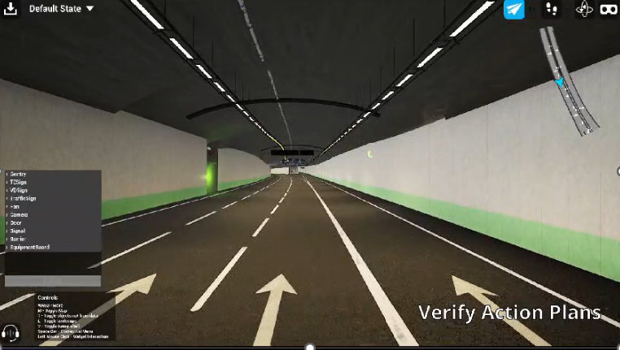
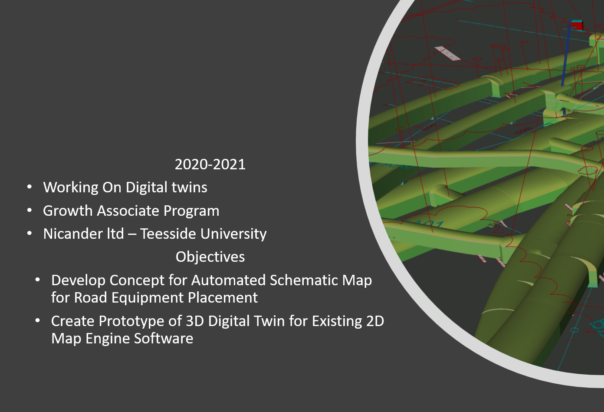
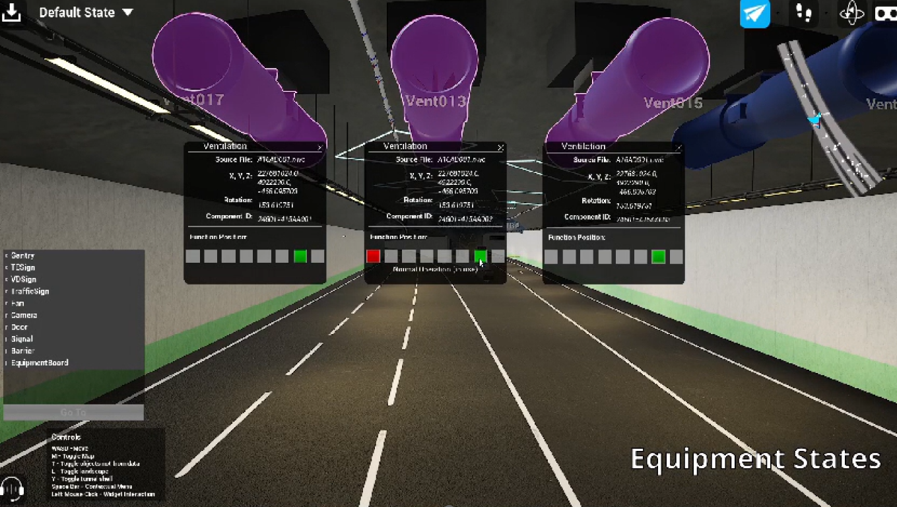

Nicander Ltd • Intelligent Transport Systems • Teesside
Tunnel Digital Twin & Control Room Operator UI
Transforming complex architectural BIM datasets and industrial SCADA sensor streams into a responsive 3D spatial dashboard, empowering control room operators to manage tunnel emergencies with rapid spatial awareness.
1. The Problem: Information Overload During Tunnel Incidents
In underground highway tunnels, control room operators bear massive cognitive responsibility. When an incident occurs—such as a vehicle fire, smoke hazard, or sudden stoppage—operators must rapidly monitor hundreds of CCTV camera feeds, ventilation fan velocities, emergency exit status lights, and variable message signs (VMS).
Legacy control room systems relied on flat, abstract 2D schematic diagrams and fragmented alarm lists. Operators had to mentally map where a smoke sensor was triggered relative to physical emergency doors, leading to dangerous hesitation during time-critical evacuations.
2. Service Design & Operator Ergonomics
Working alongside Nicander's intelligent transport systems engineers and traffic operators, I structured the digital twin interface around critical operational service steps:
- Immediate Incident Pinpointing: Rather than reading tabular sensor codes, a 3D alert pulse immediately flies the operator's viewport to the exact chainage inside the tunnel.
- Unified Sensor Telemetry: Merging CCTV view cones, ventilation airflow vectors, and fire barrier states directly inside the 3D model space.
- Schematic & 3D Synchronization: Ensuring the bird's-eye schematic map and the 3D first-person inspection view stay locked in real-time sync.


3. Technical Architecture: From BIM to Interactive Twin
Enterprise BIM models (Revit/IFC) are notoriously heavy, full of non-visual metadata that cripples real-time game engines. I built an end-to-end data pipeline to optimize assets for 60+ FPS performance:


Technical Accomplishments:
- Dynamic Asset States: Designed state machines that visually reflect equipment health (Normal, Warning, Fault, Evacuation active) with color-coded spatial markers.
- Automated Schematic Map Generation: Built an automated tool that parses linear tunnel alignments and generates simplified 2D operator schematics without manual drafting.
- VR Training Readiness: Designed the twin to double as an immersive VR training simulator for novice operators to rehearse catastrophic tunnel fire scenarios safely.
4. Measurable Outcomes & Strategic Impact
Sub-Second Incident Locating
Operators pinpointed simulated hazard locations over 50% faster compared to traditional tabular alarm lists.
Flawless 60 FPS Real-Time
Reduced multi-gigabyte BIM CAD files into a lightweight, real-time spatial dashboard running smoothly on standard commercial hardware.
Industry Showcased
Successfully demonstrated at Teesside University Industry Showcase, establishing new benchmarks for transport control room UX.